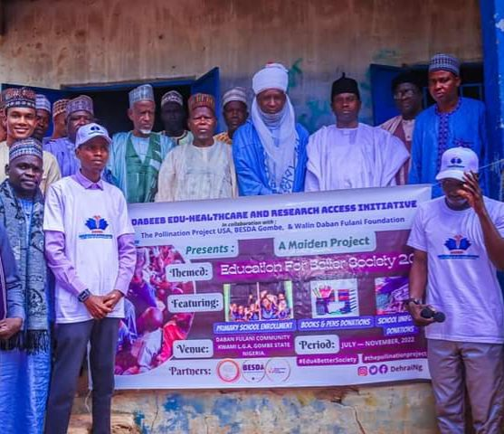
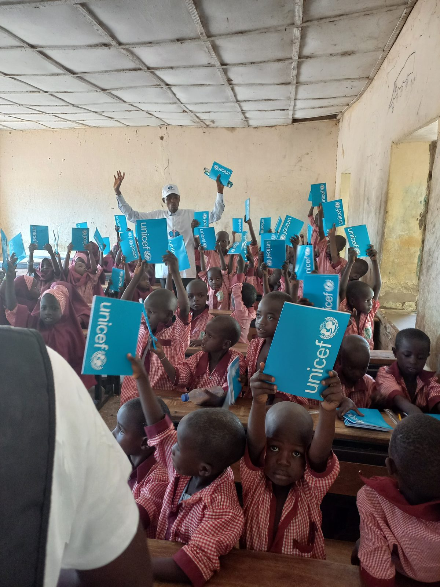
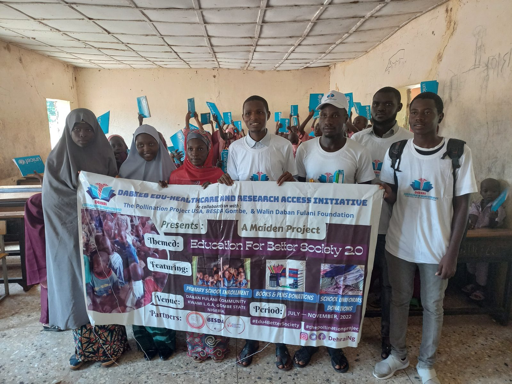

Key Project
Education For Better Society
Overview
An ongoing initiative addressing the rising number of out-of-school children in marginalised communities in northern Nigeria, through school enrolment drives and the provision of uniforms, books, and writing materials.
Activities
- Ran school enrolment drives in marginalised communities in northern Nigeria.
- Distributed uniforms, books, and writing materials to increase access to education.
Project Gallery




Selected from the project’s photo records.
Project Resources